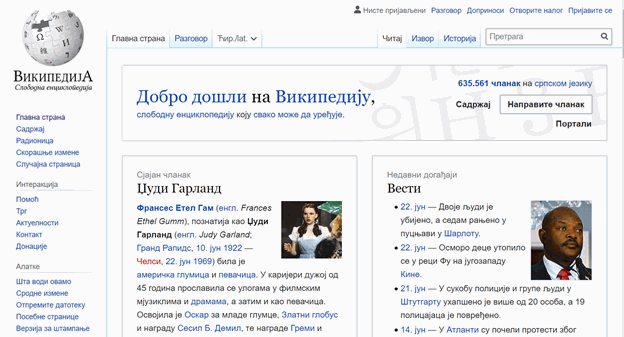
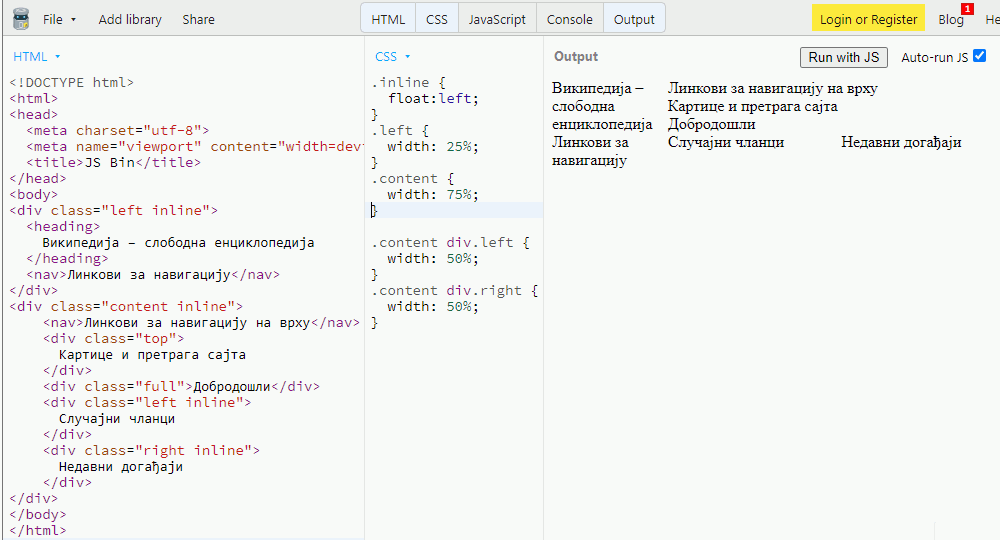
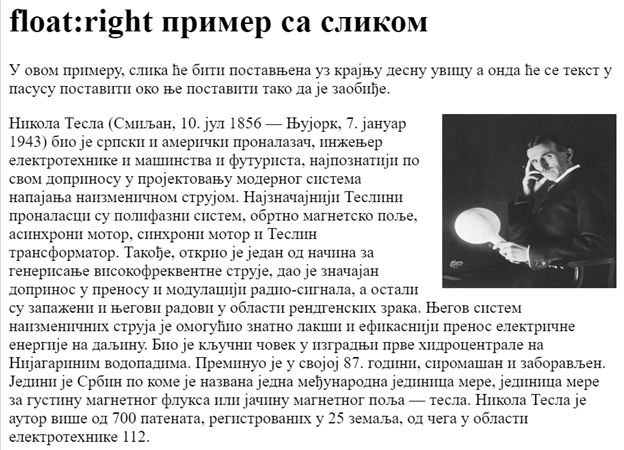
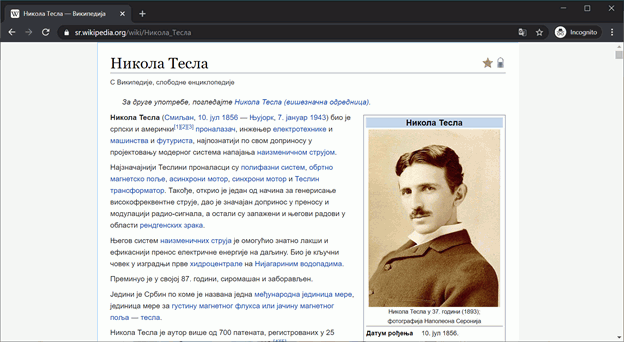

Распоред елемената¶
Стилизовање елемената стране и дефинисање њиховог изгледа је само један део веб дизајна. Други битан задатак је распоређивање елемената на страни.
На следећој слици је пример једне стране Википедије, која је подељена на области у које се постављају елементи.
{kind=link}
Са леве стране у врху се налази заглавље (енгл. header), у коме се налази лого и наслов сајта, испод кога се налази навигација са најбитнијим линковима.
Са десне стране се на врху налази трака са линковима који ће се приказивати на свим странама, испод која се налази блок елемената са табовима и текстом за претрагу сајта.
У садржају стране се налази блок са кратким описом сајта, испод кога се налазе два блока са препорученим чланцима и недавним догађајима.
За овакву поделу стране на делове се користи посебан HTML елемент који се назива <div> елемент (скраћено од енгл. division, што значи подела или одељак). Свака област је представљена једним <div> елементом, који уобичајено садржи неку класу која дефинише како га треба приказати. Постоје и специјални елементи који су веома слични елементу <div>, а служе да означе да је то област у којој се налазе наслов сајта (елемент <header>), подножје сајта (елемент <footer>), област навигације (елемент <nav>).
У следећем примеру је приказана веома упрошћена структура HTML документа који је подељен на секције приказане на претходној слици:
<div class="left inline">
<heading>Википедија – слободна енциклопедија</heading>
<nav>Линкови за навигацију</nav>
</div>
<div class="content inline">
<nav>Линкови за навигацију на врху</nav>
<div class="top">Картице и претрага сајта</div>
<div class="full">Добродошли</div>
<div class="left inline">Случајни чланци</div>
<div class="right inline">Недавни догађаји</div>
</div>
Сада је потребно дефинисати позиције и ширине елемената помоћу класа које су им додељене. Један упрошћени пример CSS стилова који се могу применити на оваквом HTML документу је приказан у следећем листингу:
.inline { float:left;}
.left { width: 25%; }
.content { width: 75%; }
.content div.left { width: 50%; }
.content div.right { width: 50%; }
Када на сајту https://jsbin.com?html,css,output унесемо овај HTML и CSS садржај, добиjaмо следећи резултат:
{kind=link}
Помоћу својстава float:left и width смо распоредили HTML елементе као што би било очекивано на основу примера сајта Википедија и тиме смо добили изглед са слике. Сада је потребно само да применимо претходна знања и попунимо садржај елемената, како бисмо добили праву веб страну.
У наредним секцијама ћемо научити више о својствима float:left и width.
Леви ток¶
У једној од претходних лекција о димензијама елемената смо се упознали са block и inline елементима. Подразумевано понашање block елемената као што је и елемент <div> је да заузме пуну ширину која му је на располагању, тако да остали елементи не могу да се нађу у истој линији (на истој висини у надређеном елементу). Овакво подразумевано понашање је карактеристика блок елемената као што су <div>, <p>, <ul>, <ol> или <li>.
У неким случајевима (као што је приказано у претходном примеру) желимо да се блокови не поставе у нову линију него да се први постави уз крајњу леву ивицу, следећи уз њега својом левом ивицом и тако даље док год има места у тренутној линији.
<div class="kolona">
Први блок који ће се поставити на крајњој левој ивици.
</div>
<div class="kolona">
Други блок који ће поставити своју леву ивицу на претходни блок.
</div>
<div class="kolona">
Трећи блок који ће поставити своју леву ивицу на претходни блок.
</div>
<div class="kolona">
Четврти блок који би требало да постави своју леву ивицу на претходни блок.
</div>
<div class="kolona">
Пети блок који ће поставити своју леву ивицу на претходни блок.
</div>
Ми можемо да променимо понашање елемената <div> и дамо им инструкције да се „залепе” уз неки елемент на левој страни ако има места. То се ради помоћу својства float:left. Блок за који је дефинисано ово својство и који има неку ограничену ширину, поставиће се уз десну ивицу претходног елемента ако има довољно места у надређеном елементу - блоку.
Дефинишимо својства float:left и ширину блоковима из претходног примера:
.kolona {
float: left;
width: 30%;
}
Ширину ових елемената је потребно експлицитно дефинисати да бисмо их спречили да заузму сав могући простор у линији. У противном својство float:left нема ефекта, пошто наредни елемент нема места да се постави уз претходни. Као резултат ових стилова добијамо распоред који је приказан на десној страни слике:
{kind=link}
У горњем примеру, први блок (<div> елемент) ће се „залепити” на леву ивицу и заузеће 30% ширине, други <div> елемент ће своју леву ивицу залепити за њега пошто може да заузме 30% ширине у истом реду, а и трећи <div> елемент ће залепити своју леву ивицу на други <div> елемент пошто и он може да стане у преосталих 40% ширине. Четврти елемент <div> покушава да се залепи уз претходни елемент, али пошто нема довољно простора, мора да пређе у следећи ред. Пети блок може да се залепи уз четврти и има довољно ширине тако да ће се наћи поред четвртог.
Битна ствар коју треба приметити је да некад збир ширина није 100%. Ако се сетите оквира елемената, постоји неколико својстава као што су margin, border и padding, која доприносе димензијама објекта.
Други чест пример коришћења својства float:left су елементи хоризонталног менија, као што је мени приказан на слици:
{kind=link}
Овакви елементи са хоризонталним менијем се често представљају структуром у облику листе елемената, као што је приказано у следећем примеру:
<ul>
<li><a href="#home">Home</a></li>
<li><a href="#news">News</a></li>
<li><a href="#contact">Contact</a></li>
<li><a href="#about">About</a></li>
</ul>
Подразумевани начин приказивања овакве листе у прегледачима је постављање ставки листе (елемената <li>) једне испод друге. У случају да желимо да направимо хоризонтални мени, овакав начин приказивања нам не одговара, па треба да спречимо <li> блок елемент да заузме пуну ширину која му је на располагању и тиме „истера” следећи блок у нову линију. CSS стилови који омогућавају да се оваква структура прикаже као хоризонтални мени су приказани у следећем примеру:
ul {
list-style-type: none;
}
li {
float: left;
padding-right: 10px;
}
Прво је потребно поставити стил <ul> листе тако да се не приказују никакве ознаке (нпр. тачке или цртице) испред ставки листе. Својство float:left дефинише да ће се сваки елемент <li> „лепити” за претходни својом левом ивицом, чиме се добија хоризонтални мени. Коначно, padding-right: 10px; ће мало раздвојити <li> елементе, како би постојао неки размак са десне стране сваког елемента.
Десни ток¶
Поред левог тока постоји и десни, који говори прегледачу да треба да постави елемент на крајњу десну страну ако је то могуће и залепи његову десну ивицу за претходни елемент.
Десни ток се користи када је потребно поставити неки елемент (на пример слику) уз десну ивицу, тако да остатак текста заузме простор од почетка до тог елемента и настави да се шири испод елемента.
{kind=link}
Ево и HTML кôда којим се може дефинисати оваква структура:
<div>
<img src="Nikola_Tesla_c1898.jpg " alt="Никола Тесла">
Никола Тесла (Смиљан, 10. јул 1856 — Њујорк, 7. јануар 1943)
био је српски и амерички проналазач, инжењер електротехнике
и машинства и футуриста, најпознатији по свом доприносу у
пројектовању модерног система напајања наизменичном струјом.
Најзначајнији Теслини проналасци су полифазни систем, обртно
магнетско поље, асинхрони мотор, синхрони мотор и Теслин
трансформатор. Такође, открио је један од начина за генерисање
високофреквентне струје, дао је значајан допринос у преносу и
модулацији радио-сигнала, а остали су запажени и његови радови
у области рендгенских зрака.
</div>
Под претпоставком да је за слике постављен стил img { float: right; }, слика ће бити постављена уз десну ивицу <div> елемента у коме се налази. Потом ће текст о Николи Тесли бити постављен у <div> елемент, почевши од почетка (горње леве ивице) па до ивице коју је заузела слика. Ако је тексту за приказивање потребна висина већа од висине слике, након достизања висине слике текст ће простирати и испод слике.
Аутоматске маргине¶
У претходним примерима смо користили распореде који заузимају пуну ширину и распоређују HTML елементе унутар пуне ширине прозора прегледача. Такав распоред је флексибилан и он се користи на многим веб сајтовима, али мана му је то што распоред може да се поремети при промени ширине прозора. Некада се могу добити неочекивани распореди елемената у случају да се смањи ширина прозора прегледача, на пример променом оријентације екрана (или повлачењем ивица прозора прегледача).
Један начин да се ово избегне је да се дизајн стране организује тако да сав садржај стане у блок фиксне ширине. У том случају, ако је ширина блока мања од ширине прозора прегледача, ивице блока се равномерно одмакну од ивица прозора прегледача, као што је приказано на следећој слици.
{kind=link}
Ово је мало промењен садржај стране Википедије о Николи Тесли, који је постављен у блок ширине 800px. Блок ће се позиционирати тако да је једнако одмакнут од ивица прозора прегледача ако је ширина прозора већа од 800px, док ће се у случају да је ширина прозора мања од 800px појавиће се хоризонтални клизач (хоризонтална скрол трака).
Овакав изглед постижемо тако што комплетну структуру ставимо у посебан <div> елемент, који ће окружити све елементе и који ће целу групу одмакнути од спољних ивица стране постављањем својства margin:auto и постављањем жељене ширине елемента који окружује сав садржај. Као алтернатива, уместо елемента који окружује садржај се користи елемент <body>, који ионако мора да окружи садржај стране. CSS стилови који омогућавају овакав распоред су приказани у следећем примеру:
body {
margin: auto;
width: 800px;
}
Претпоставимо да смо овакво својство додали у примеру у коме смо демонстрирали како float:left својство утиче на распоред елемената. Ако поставимо аутоматске маргине и неку погодну ширину за елемент <body>, добиће се распоред као на следећој слици:
{kind=link}
Елемент <body> смо означиили испрекиданом линијом да бисмо истакли да је распоређен у простор фиксне ширине и одмакнут од спољних ивица прозора. Остали блокови (<div> елементи) имају дефинисане ширине и заузеће задати простор у оквиру омотача, као што је објашњено у секцији о левом току.